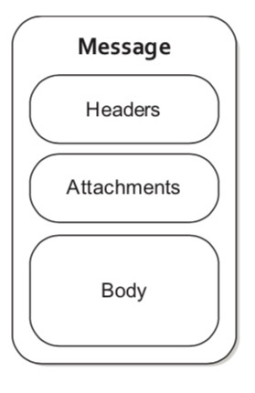
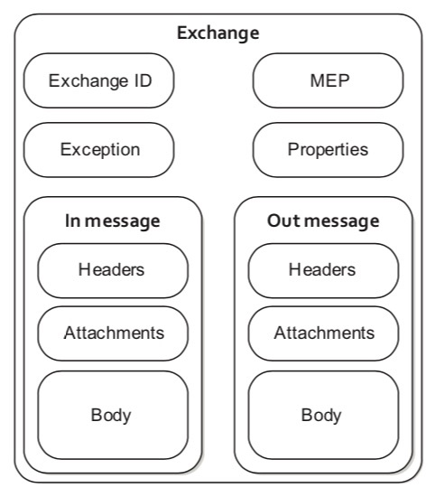
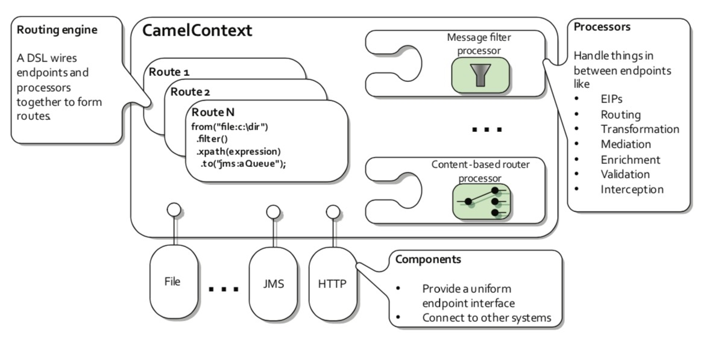
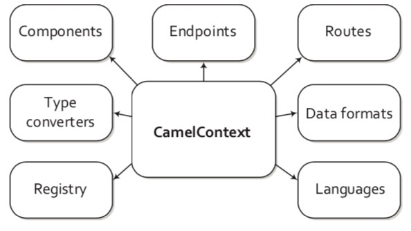
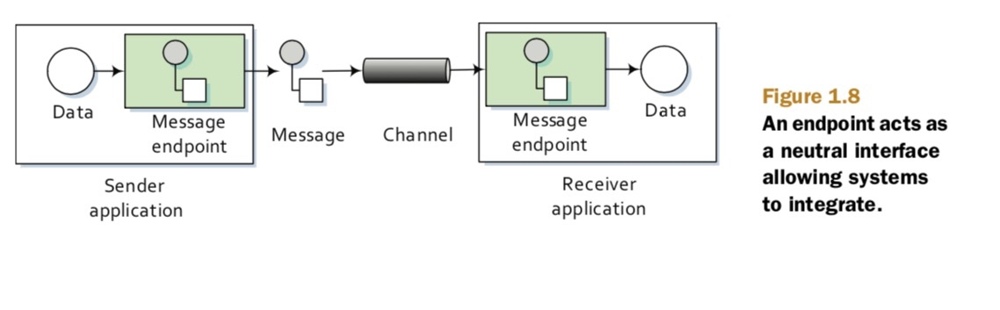
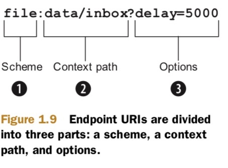
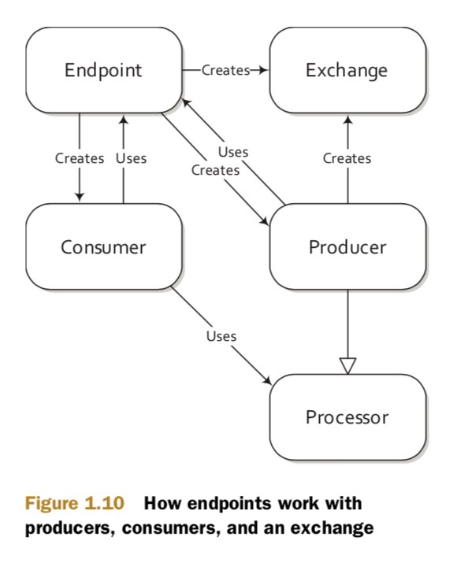
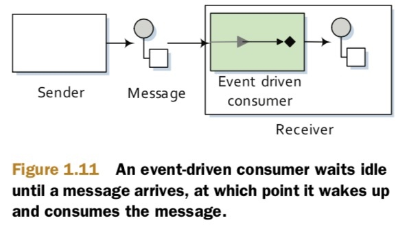
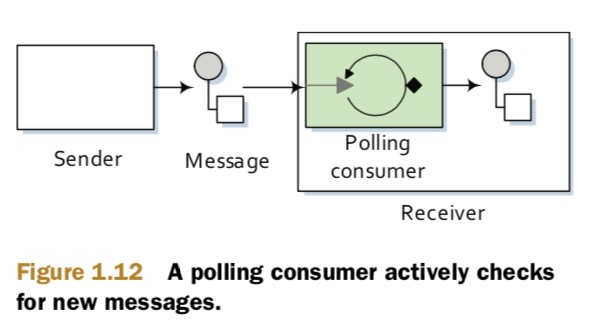

其实我的理解很简单，camel做了很多的抽象，抽象是根据schema进行的，每个资源有这个不同的schema然后对应着不同的Component，也就是对应这资源的push或者pull。配置的router类似于java的stream-api，每个router对应着processor
Message与Exchange
Message

Message包含三个数据已经在上图指出。
同时Message还有一个错误标志FAULT FLAG类似于WSDL JBI这种，他们会将标准输出以及错误输出区分开来，Camel通过这个标志来进行表示，但是通常集成程序不会处理错误输出一般应该在应用层面解决。
在路由过程中，message存储在exchange中。
Exchange
Exchange作为当消息在路由时的存储单位。同时一个Exchange提供多种类型在不通的系统交互中。例如MEP(message exchange patterns)有两种类型one-way或者request-response
Exchange通过字段来进行标识。
- InOnly
one-way类型，例如JMS Message - InOut
request-response类型，例如HTTP请求

- Exchange ID 用来标识不通的exchange
- MEP 用来标识Exchange类型，上面说的InOnly或者Inout
- Exception 当路由消息发生错误的时候将会存储错误信息
- Properties 类似于
Message的Header用来存储配置信息 - InMessage 存储进来的消息
- OutMessage 存储出去的信息只有type为Inout的时候
Camel的大致结构

- RoutingEngine 负责通过用户DSL定义的路由规则进行消息的路由。
- Processor 用来在路由过程中处理消息。
- Components 是Camel的扩展点，特别说明下EndPoint是Camel的具体抽象接口，不通的Component需要提供不同的EndPoint。
Camel中的概念
CamelContext
CamelContext目前我的理解为Camel的核心大脑负责保存各种各样的信息。类似于SpringContext。

RoutingEngine
负责消息的路由
ROUTES
Camel中的最重要的抽象，规划消息的路由链路
DSL
为了将Processor与EndPoint连接起来，Camel定义了DSL语言类似于JAVA的流式语法
简单的demo
from("file:data/inbox")
.filter()
.xpath("/order[not(@test)]")
.to("jms:queue:order")
Camel对Spring的支持，配置如下
<route>
<from uri="file:data/inbox"/>
<filter>
<xpath>/order[not(@test)]</xpath>
<to uri="jms:queue:order"/>
</filter>
</route>
每一个Route规则实际是对应着一个Processor
Processor
处理器，负责根据路由中定义的进行处理
Component
Camel中最大的扩展点，用户可以进行自定义扩展，同时Component也是EndPoint的Factory
EndPoint

EndPoint是Camel对第三方的抽象，通过它可以进行收发消息。
在Camel中我们定义EndPoint通过URIs，例如file:data/inbox?delay=5000然后Camle在进行解析

- Scheme 将决定使用哪个Component，上面的demo将会使用
FileComponent - ContextPath 决定了对哪个路径进行操作
- Options 操作参数，上面表示每隔5s轮询一次

上面的图展示了EndPoint、producer、consumers以及Exchange之间是如何交互的，如上图所示EndPoint实际上是producer以及consumers的制造工厂。
Producer
Producer是Camel中的抽象类负责制造发送消息，当一个消息需要发送到一个endpoint消息生产者负责填充信息。
CONSUMER
负责消费信息，并包装在exchange中，然后将他们发送给Processor进行处理。
EVENT-DRIVEN CONSUMER

最常见的消息消费模式，事件驱动类型。(异步)
POLLING CONSUMER

轮序拉取类型。（FTP）
简单的DEMO
public class FileCopierWithCamel {
public static void main(String args[]) throws Exception {
CamelContext context = new DefaultCamelContext();
context.addRoutes(new RouteBuilder() {
public void configure() {
from("file:data/inbox?noop=true")
.to("file:data/outbox");
} });
context.start();
Thread.sleep(10000);
context.stop();
}
}